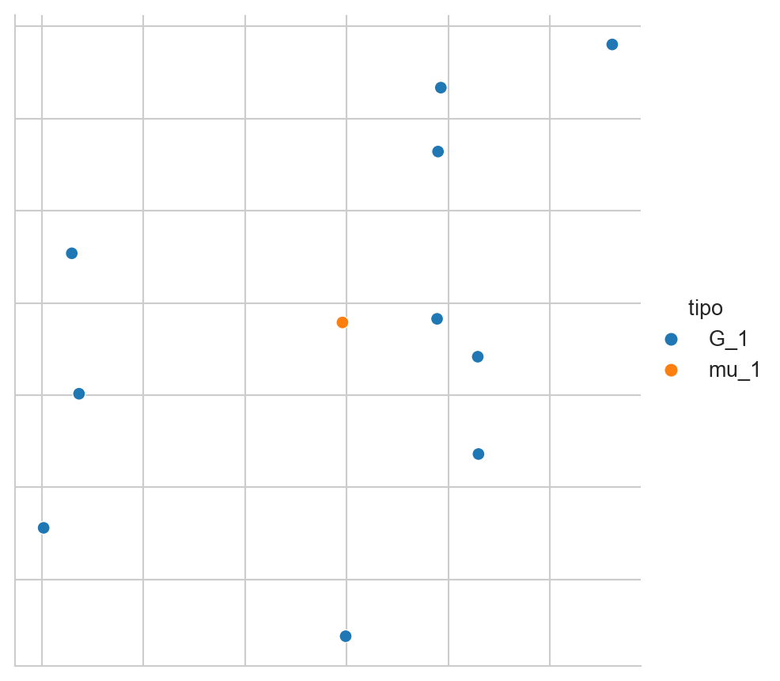
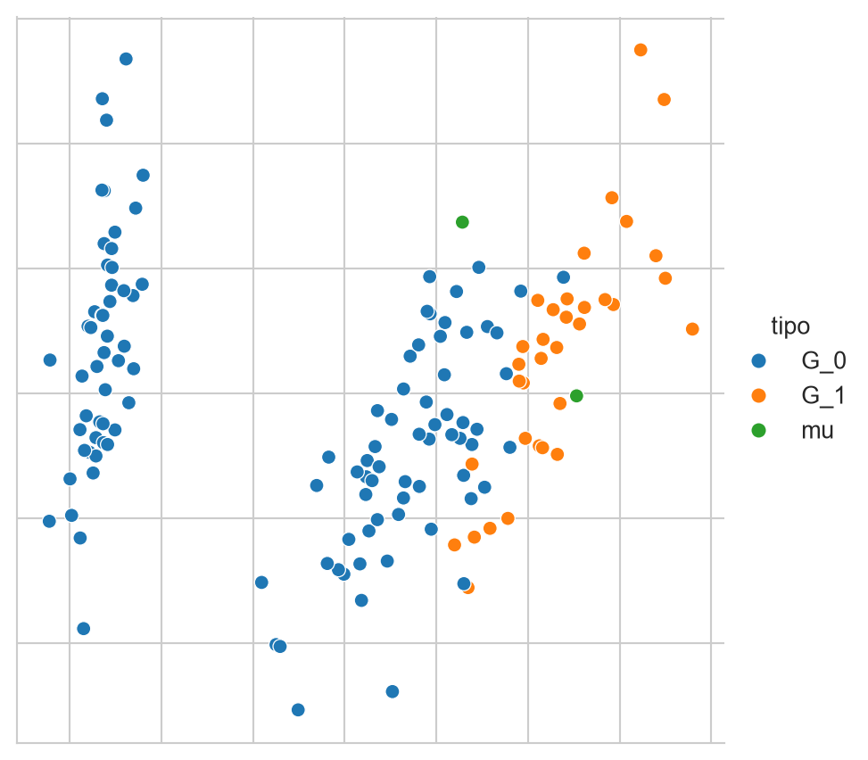
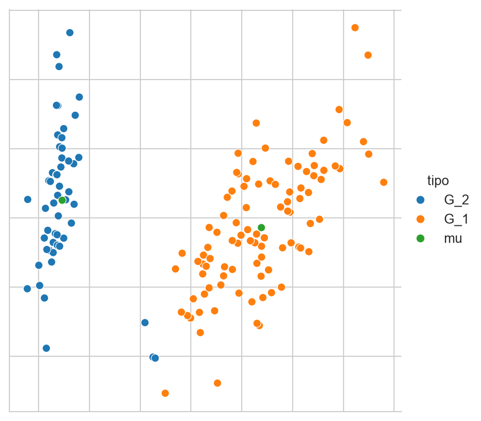
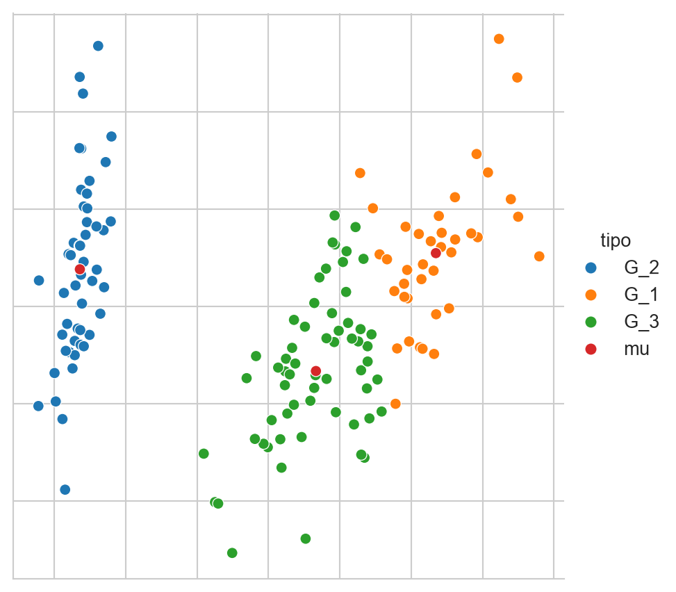
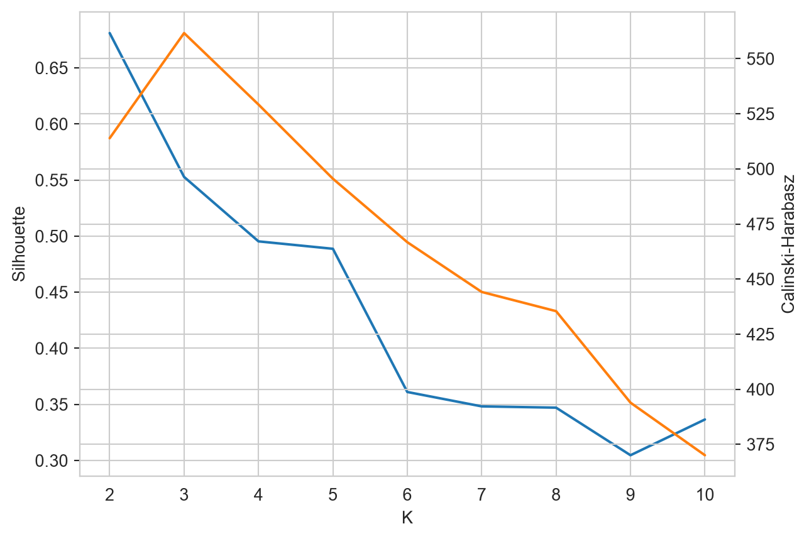

from sklearn.cluster import KMeans
from sklearn.datasets import load_iris
from sklearn import decomposition
from sklearn import metrics
from scipy import linalg
from itertools import permutations
from matplotlib import pylab as plt
import numpy as np
import pandas as pd
import seaborn as sns
Borrador en preparación (rama
develop): el contenido puede cambiar. La edición vigente está en https://ingeotec.github.io/AprendizajeComputacional/
14 Agrupamiento
El objetivo de la unidad es conocer y aplicar el algoritmo de agrupamiento k-medias
14.1 Paquetes usados
14.2 Introducción
Esta unidad trata el problema de agrupamiento, el cual es un problema de aprendizaje no supervisado (Sección 1.5), en el cual se cuenta con un conjunto \(\mathcal D = \{ x_i \mid i=1, \ldots, N\}\) donde \(x_i \in \mathbb R^d.\) El objetivo de agrupamiento es separar los elementos de \(\mathcal D\) en \(K\) grupos. Es decir asociar a \(x_i \in \mathcal D\) a un grupo \(x_i \in G_j\) donde \(\cup_j^K G_j = \mathcal D\) y \(G_j \cap G_i = \emptyset\) para todo \(i \neq j.\)
Por supuesto existen diferentes algoritmos que se han desarrollado para generar esta partición, en particular, todos ellos encuentran la partición optimizando una función objetivo que se considera adecuada para el problema que se está analizando. En particular, esta unidad se enfoca a describir uno de los algoritmos de agrupamiento más utilizados que es K-medias.
14.3 K-medias
De manera formal el objetivo de K-medias es encontrar la partición \(G = \{G_1, G_2, \ldots, G_K \}\) que corresponda al \(\min \sum_{i=1}^K \sum_{x \in G_i} \mid\mid x - \mu_i \mid\mid,\) donde \(\mu_i\) es la media de todos los elementos que pertenecen a \(G_i.\)
Para comprender la función objetivo (\(\min \sum_{i=1}^K \sum_{x \in G_i} \mid\mid x - \mu_i \mid\mid\)) de k-medias se explican los dos componentes principales que son las medias \(\mu_i\) y los grupos \(G_i.\)
Para ilustrar tanto a \(\mu_i\) como a \(G_i\) se utiliza el problema del iris (Sección 13.2.1) cuyos datos se pueden obtener de la siguiente manera.
D, y = load_iris(return_X_y=True)14.3.1 \(\mu_i\)
Como se describió, \(\mu_i\) es la media de los elementos que corresponden al grupo \(G_i\). Asumiendo que el grupo \(1\) (\(G_1\)) tiene \(10\) elementos seleccionados de manera aleatoria de \(\mathcal D\) como se muestra a continuación.
index = np.arange(len(D))
np.random.shuffle(index)
sel = index[:10]
G_1 = D[sel]La variable G_1 tiene los 10 elementos considerados como miembros de \(G_1\) entonces \(\mu_1\) se calcula como la media de cada componente, lo cual se puede calcular con el siguiente código.
mu_1 = G_1.mean(axis=0)La Figura 14.1 muestra los elementos seleccionados (\(x \in G_1\)) y la media (\(\mu_1\)) del grupo. Los elementos se encuentran en \(\mathbb R^4\) y para visualizarlos se transformaron usando PCA descrito en la Sección 13.2.1.
Código
pca = decomposition.PCA(n_components=2).fit(D)
Xn = pca.transform(G_1)
mu = pca.transform(np.atleast_2d(G_1.mean(axis=0)))[0]
data = pd.DataFrame(dict(x=Xn[:, 0], y=Xn[:, 1], tipo=['G_1'] * Xn.shape[0]))
data.loc[Xn.shape[0]] = dict(x=mu[0], y=mu[1], tipo='mu_1')
sns.set_style('whitegrid')
fig = sns.relplot(data, kind='scatter', hue='tipo', x='x', y='y')
fig.tick_params(bottom=False, top=False,
left=False, right=False,
labelbottom=False, labelleft=False)
fig.set(xlabel=None, ylabel=None)
14.3.2 \(G_i\)
El complemento del procedimiento anterior es encontrar los elementos de \(G_i\) dada la \(\mu_i\). El ejemplo consiste en generar dos medias, es decir, \(K=2\) y encontrar los elementos que corresponden a las medias generadas. Se puede utilizar cualquier procedimiento para generar dos vectores de manera aleatoria, pero en este ejemplo se asume que estos vectores corresponden a dos elementos de \(\mathcal D.\) Estos elementos son los que se encuentran en los índices \(50\) y \(100\) tal y como se muestra en las siguientes instrucciones.
mu_1 = D[50]
mu_2 = D[100]El elemento \(x\) pertenece al grupo \(G_i\) si el valor \(\mid\mid x - \mu_i\mid\mid\) corresponde al \(\min_j \mid\mid x - \mu_j\mid\mid.\) Entonces se requiere calcular \(\mid\mid x - \mu_i\mid\mid\) para cada elemento \(x \in \mathcal D\) y para cada una de las medias \(\mu_i\). Esto se puede realizar con la siguiente instrucción
dis = np.array([linalg.norm((D - np.atleast_2d(mu)),
axis=1)
for mu in [mu_1, mu_2]]).Tdonde se puede observar que el ciclo itera por cada una de las medias, i.e., mu_1 y mu_2. Después se calcula la norma utilizando la función linalg.norm y finalmente se regresa la transpuesta para tener una matriz de 150 renglones y dos columnas que corresponden al número de ejemplos en \(\mathcal D\) y a las dos medias. Los valores de dis[50] y dis[100] son array([0. , 1.8439]) y array([1.8439, 0. ]) respectivamente. Tal y como se espera porque \(\mu_1\) corresponde al índice 50 y \(\mu_2\) es el índice 100. Estos dos ejemplos, array([0. , 1.8439]) y array([1.8439, 0. ]), permiten observar que el argumento mínimo de dis identifica al grupo del elemento, haciendo la consideración que el índice 0 representa \(G_1\) y el índice 1 es \(G_2.\) La siguiente instrucción muestra cómo se realiza esta asignación.
G = dis.argmin(axis=1)La Figura 14.2 muestra los grupos formados, el primer grupo G_1 se encuentra en azul y el segundo en naranja, también muestra los elementos que fueron usados como medias de cada grupo; estos elementos se observan en color verde.
Código
pca = decomposition.PCA(n_components=2).fit(D)
D_pca = pca.transform(D)
data = pd.DataFrame([dict(x=x, y=y, tipo=f'G_{g}')
for (x, y), g in zip(D_pca, G)])
mu = np.vstack((D_pca[50], D_pca[100]))
mu_data = pd.DataFrame(dict(x=mu[:, 0],
y=mu[:, 1],
tipo=['mu'] * mu.shape[0]))
data = pd.concat((data, mu_data))
sns.set_style('whitegrid')
fig = sns.relplot(data, kind='scatter', hue='tipo', x='x', y='y')
fig.tick_params(bottom=False, top=False,
left=False, right=False,
labelbottom=False, labelleft=False)
fig.set(xlabel=None, ylabel=None)
14.3.3 Algoritmo
Habiendo explicado \(\mu_i\) y \(G_i\) se procede a describir el procedimiento para calcular los grupos utilizado por k-medias. Este es un procedimiento iterativo que consta de los siguientes pasos.
- Se generan \(K\) medias de manera aleatoria, donde \(\mu_i\) corresponde a \(G_i.\)
- Para cada media, \(\mu_i\), se seleccionan los elementos más cercanos, esto es, \(x \in G_i\) si \(\mid\mid x - \mu_i\mid\mid\) corresponde al \(\min_j \mid\mid x - \mu_j\mid\mid.\)
- Se actualizan las \(\mu_i\) con los elementos de \(G_i.\)
- Se regresa al paso 2.
El procedimiento termina cuando se llega a un número máximo de iteraciones o que la variación de los \(\mu_i\) es mínima, es decir, que los grupos no cambian.
14.4 Maximización de la Expectativa
K-medias (Sección 14.3) es un caso particular de un algoritmo más general conocido como Expectation-Maximization (EM), el cual se utiliza para estimar por máxima verosimilitud (Sección 6.3.1) los parámetros de un modelo cuando este depende de una variable que no se observa, es decir, una variable latente.
En el problema de agrupamiento la variable que no se observa es el grupo al que pertenece cada elemento \(x \in \mathcal D\). Sea \(z\) la variable aleatoria correspondiente, donde \(z=i\) indica que \(x \in G_i\). Se asume que \(x\) proviene de una mezcla de \(K\) distribuciones, donde la distribución \(i\)-ésima está definida por la función de densidad \(f_{\theta_i}\) y tiene una probabilidad a priori \(\pi_i = \mathbb P(z=i)\) tal que \(\sum_{i=1}^K \pi_i = 1.\) Bajo este modelo, la función de densidad de \(x\) corresponde a \(f(x) = \sum_{i=1}^K \pi_i f_{\theta_i}(x).\)
Los parámetros de este modelo son \(\Theta = \{\pi_1, \theta_1, \ldots, \pi_K, \theta_K\}\), entonces siguiendo la misma notación de la Sección 6.3.1, la verosimilitud de \(\mathcal D\) es
\[ \mathcal L(\Theta) = \prod_{x \in \mathcal D} \sum_{i=1}^K \pi_i f_{\theta_i}(x), \tag{14.1}\]
cuyo logaritmo es
\[ \ell(\Theta) = \sum_{x \in \mathcal D} \log \left(\sum_{i=1}^K \pi_i f_{\theta_i}(x) \right). \tag{14.2}\]
La dificultad para maximizar \(\ell(\Theta)\) (Ecuación 14.2) de manera directa es que, al no observarse \(z\), el logaritmo no puede aplicarse a cada término de la suma en \(i\). EM resuelve este problema con un procedimiento iterativo de dos pasos, Expectativa (E) y Maximización (M), que en la iteración \(t\) se definen de la siguiente manera.
Para entender por qué el primer paso se llama Expectativa conviene considerar qué pasaría si \(z\) se observara. En ese caso, para un elemento \(x\) con grupo verdadero \(z\), se podría usar el indicador \(\mathbb 1(z=i),\) que vale \(1\) si \(z=i\) y \(0\) en otro caso, para escribir el logaritmo de su verosimilitud completa (la que incluye a \(z\)) como \(\sum_{i=1}^K \mathbb 1(z=i) \log(\pi_i f_{\theta_i}(x)),\) ya que únicamente el término correspondiente al grupo verdadero de \(x\) contribuye a la suma, al ser cero el resto de los indicadores. Sumando sobre \(\mathcal D\) se obtiene la log-verosimilitud completa
\[ \ell_c(\Theta) = \sum_{x \in \mathcal D} \sum_{i=1}^K \mathbb 1(z=i) \log(\pi_i f_{\theta_i}(x)). \tag{14.3}\]
Maximizar la Ecuación 14.3 sería sencillo, sin embargo no se puede calcular porque \(z,\) y por lo tanto \(\mathbb 1(z=i),\) no se observa. La idea de EM es sustituir el indicador \(\mathbb 1(z=i)\) por su valor esperado dado lo que sí se observa, es decir, dado \(x\) y los parámetros actuales \(\Theta^{(t)}\); esta esperanza es
\[ \mathbb E[\mathbb 1(z=i) \mid x, \Theta^{(t)}] = \mathbb P(z=i \mid x, \Theta^{(t)}) = \gamma_i(x), \tag{14.4}\]
donde la primera igualdad se debe a que la esperanza de una variable indicadora corresponde a la probabilidad del evento que indica. Sustituyendo la Ecuación 14.4 en la Ecuación 14.3, en lugar de \(\ell_c(\Theta)\) se obtiene su valor esperado
\[ Q(\Theta, \Theta^{(t)}) = \mathbb E_{z \mid x, \Theta^{(t)}}[\ell_c(\Theta)] = \sum_{x \in \mathcal D} \sum_{i=1}^K \gamma_i(x) \log(\pi_i f_{\theta_i}(x)). \tag{14.5}\]
En la Ecuación 14.5 se puede notar que \(Q\) tiene dos argumentos, \(\Theta\) y \(\Theta^{(t)}\), con roles distintos. \(\Theta^{(t)}\) son los parámetros de la iteración anterior, que ya se conocen; mientras que \(\Theta\) es la variable sobre la que se maximiza. Dado que \(\gamma_i(x)\) (Ecuación 14.4) depende únicamente de \(x\) y \(\Theta^{(t)}\), y no de \(\Theta\), al resolver \(\arg\max_\Theta Q(\Theta, \Theta^{(t)})\) cada \(\gamma_i(x)\) se comporta como una constante, es decir, un peso fijo que ya no cambia durante la maximización; los únicos términos de la Ecuación 14.5 que dependen de \(\Theta\) son \(\pi_i\) y \(f_{\theta_i}(x)\), dentro del logaritmo.
Calcular \(\gamma_i(x)\) (Ecuación 14.4), es necesario para resolver \(\arg\max_\Theta Q(\Theta, \Theta^{(t)})\); y este se calcula en el Paso E, de ahí su nombre, Expectativa. El Paso M completa el procedimiento encontrando \(\Theta^{(t+1)} = \arg\max_\Theta Q(\Theta, \Theta^{(t)}),\) es decir, maximizando la esperanza; de ahí que se llame Maximización. A continuación se presentan ambos pasos de manera explícita.
Paso E. Dados los parámetros actuales \(\Theta^{(t)} = \{\pi_i^{(t)}, \theta_i^{(t)}\}\), se calcula \(\gamma_i(x)\) (Ecuación 14.4) para cada \(x \in \mathcal D\) y cada grupo \(i,\) lo cual, sustituyendo \(\mathbb P(z=i \mid x, \Theta^{(t)})\) con el Teorema de Bayes, corresponde a
\[ \gamma_i(x) = \mathbb P(z=i \mid x, \Theta^{(t)}) = \frac{\pi_i^{(t)} f_{\theta_i^{(t)}}(x)}{\sum_{j=1}^K \pi_j^{(t)} f_{\theta_j^{(t)}}(x)}. \tag{14.6}\]
\(\gamma_i(x)\) es la responsabilidad de \(G_i\) en el elemento \(x\); a diferencia del paso 2 de K-medias (Sección 14.3) donde \(x\) se asigna completamente a un grupo, en EM \(x\) se asigna de manera fraccionaria a los \(K\) grupos, dado que \(\gamma_i(x) \in [0, 1]\) y \(\sum_{i=1}^K \gamma_i(x) = 1.\)
Paso M. Con las responsabilidades del paso anterior se actualizan los parámetros \(\Theta^{(t+1)} = \arg\max_\Theta Q(\Theta, \Theta^{(t)})\) (Ecuación 14.5). La probabilidad a priori se actualiza con
\[ \pi_i^{(t+1)} = \frac{1}{N} \sum_{x \in \mathcal D} \gamma_i(x), \tag{14.7}\]
y \(\theta_i^{(t+1)}\) se obtiene con la estimación de máxima verosimilitud de \(f_{\theta_i}\) ponderando cada \(x\) con \(\gamma_i(x).\) Por ejemplo, cuando \(f_{\theta_i}\) corresponde a \(\mathcal N(\mu_i, \Sigma_i)\) (Sección 6.3.3) las actualizaciones son
\[ \mu_i^{(t+1)} = \frac{\sum_{x \in \mathcal D} \gamma_i(x) \, x}{\sum_{x \in \mathcal D} \gamma_i(x)}, \tag{14.8}\]
\[ \Sigma_i^{(t+1)} = \frac{\sum_{x \in \mathcal D} \gamma_i(x) \, (x - \mu_i^{(t+1)})(x - \mu_i^{(t+1)})^\intercal}{\sum_{x \in \mathcal D} \gamma_i(x)}. \tag{14.9}\]
Los pasos E (Ecuación 14.6) y M (Ecuación 14.7, Ecuación 14.8 y Ecuación 14.9) se repiten hasta que \(\ell(\Theta)\) converge o se llega a un número máximo de iteraciones, de manera análoga al criterio de paro de K-medias.
14.4.1 K-medias como caso particular de EM
K-medias corresponde a EM cuando se hacen dos suposiciones sobre el modelo. La primera es que las \(K\) distribuciones son Gaussianas con la misma matriz de covarianza y esta es proporcional a la identidad, es decir, \(f_{\theta_i} = \mathcal N(\mu_i, \sigma^2 I)\) para todo \(i,\) con \(\sigma^2\) fija y compartida por los \(K\) grupos; la segunda es que todos los grupos son igualmente probables a priori, i.e., \(\pi_i = \frac{1}{K}\) para todo \(i.\)
Para observar el efecto de estas suposiciones en el Paso E (Ecuación 14.6) se requiere la función de densidad de una Gaussiana multivariada con media \(\mu_i\) y matriz de covarianza esférica \(\sigma^2 I\); para \(x \in \mathbb R^d\) esta densidad es
\[ f_{\theta_i}(x) = \mathcal N(x \mid \mu_i, \sigma^2 I) = \frac{1}{(2\pi\sigma^2)^{d/2}} \exp\left(-\frac{1}{2\sigma^2} \mid\mid x - \mu_i \mid\mid^2\right), \tag{14.10}\]
donde \((2\pi\sigma^2)^{-d/2}\) es la constante de normalización de la Gaussiana. Se puede observar en la Ecuación 14.10 que esta constante depende únicamente de \(\sigma^2\) y de \(d\), no de \(\mu_i\), entonces tiene el mismo valor para las \(K\) Gaussianas al ser \(\sigma^2\) compartida. Sustituyendo la Ecuación 14.10 y \(\pi_i = \pi_j = \frac{1}{K}\) en la definición general del Paso E (Ecuación 14.6) se obtiene
\[ \gamma_i(x) = \frac{\dfrac{1}{K} \cdot \dfrac{1}{(2\pi\sigma^2)^{d/2}} \exp\left(-\dfrac{1}{2\sigma^2} \mid\mid x - \mu_i \mid\mid^2\right)}{\displaystyle\sum_{j=1}^K \dfrac{1}{K} \cdot \dfrac{1}{(2\pi\sigma^2)^{d/2}} \exp\left(-\dfrac{1}{2\sigma^2} \mid\mid x - \mu_j \mid\mid^2\right)}. \tag{14.11}\]
En la Ecuación 14.11 el factor \(c = \frac{1}{K} \cdot \frac{1}{(2\pi\sigma^2)^{d/2}}\) es el mismo en el numerador y en cada uno de los \(K\) términos de la suma del denominador, dado que no depende ni del grupo \(i\) del numerador ni del índice \(j\) de la suma. Al ser un factor común se puede sacar de la suma, quedando
\[ \gamma_i(x) = \frac{c \cdot \exp\left(-\frac{1}{2\sigma^2} \mid\mid x - \mu_i \mid\mid^2\right)}{c \cdot \displaystyle\sum_{j=1}^K \exp\left(-\frac{1}{2\sigma^2} \mid\mid x - \mu_j \mid\mid^2\right)}, \tag{14.12}\]
y como \(c > 0\), se cancela entre el numerador y el denominador de la Ecuación 14.12, es decir, las responsabilidades no dependen ni de \(\pi_i\) ni de la constante de normalización de la Gaussiana, sino únicamente de la distancia de \(x\) a cada media. Esto se resume en
\[ \gamma_i(x) = \frac{\exp\left(-\frac{1}{2\sigma^2} \mid\mid x - \mu_i \mid\mid^2\right)}{\sum_{j=1}^K \exp\left(-\frac{1}{2\sigma^2} \mid\mid x - \mu_j \mid\mid^2\right)}. \tag{14.13}\]
Para tomar el límite \(\sigma^2 \to 0\) en la Ecuación 14.13 conviene denotar \(d_j = \mid\mid x - \mu_j \mid\mid^2\) y, asumiendo que la media más cercana a \(x\) es única, sea \(i^*\) el grupo tal que \(d_{i^*} = \min_j d_j\). Multiplicando el numerador y el denominador de la Ecuación 14.13 por \(\exp\left(\frac{1}{2\sigma^2} d_{i^*}\right)\), es decir, sacando de la suma del denominador el factor común \(\exp\left(-\frac{1}{2\sigma^2} d_{i^*}\right)\) tal como se hizo con \(c\) en la Ecuación 14.12, se obtiene
\[ \gamma_i(x) = \frac{\exp\left(-\frac{1}{2\sigma^2} (d_i - d_{i^*})\right)}{\displaystyle\sum_{j=1}^K \exp\left(-\frac{1}{2\sigma^2} (d_j - d_{i^*})\right)}. \tag{14.14}\]
En la Ecuación 14.14 cada exponente está escrito en términos de \(d_j - d_{i^*} \geq 0\), dado que \(d_{i^*}\) es el mínimo; en particular, para \(j = i^*\) el exponente es \(0\) y por lo tanto ese término de la suma es \(\exp(0) = 1\), sin importar el valor de \(\sigma^2\). Para cualquier otro grupo \(j \neq i^*\) se tiene \(d_j - d_{i^*} > 0\), entonces al tomar el límite \(\sigma^2 \to 0\) el exponente \(-\frac{1}{2\sigma^2}(d_j - d_{i^*}) \to -\infty\) y en consecuencia ese término tiende a \(\exp(-\infty) = 0\). Esto significa que en el límite la suma del denominador de la Ecuación 14.14 se reduce únicamente al término \(j=i^*\), es decir, \(\sum_{j=1}^K \exp\left(-\frac{1}{2\sigma^2} (d_j - d_{i^*})\right) \to 1,\) de donde se dice que este término domina la suma: todos los demás términos se desprecian frente a él conforme \(\sigma^2 \to 0\).
Con esta asignación completa, i.e., \(\gamma_i(x) \in \{0, 1\}\), la actualización de \(\mu_i\) del Paso M (Ecuación 14.8) se reduce a la media de los elementos de \(G_i,\) que corresponde al paso 3 de K-medias. Por lo tanto, K-medias es el algoritmo EM aplicado a una mezcla de Gaussianas con matriz de covarianza esférica compartida, en el límite en que \(\sigma^2 \to 0\) y sustituyendo la responsabilidad \(\gamma_i(x)\) por la asignación completa al grupo más cercano.
14.5 Ejemplo: Iris
En el siguiente ejemplo se usará K-medias para encontrar 2 y 3 grupos en el conjunto del iris. La clase se inicializa primero con 2 grupos (primera línea). En la segunda instrucción se predice los grupos para todo el conjunto de datos. Las medias para cada grupo se encuentran en el atributo cluster_centers_.
m = KMeans(n_clusters=2, n_init='auto').fit(D)
cl = m.predict(D)La Figura 14.3 muestra el resultado del algoritmo k-medias en el conjunto del Iris, se muestran los dos grupos \(G_1\) y \(G_2\) y en color verde \(\mu_1\) y \(\mu_2\).
Código
pca = decomposition.PCA(n_components=2).fit(D)
D_pca = pca.transform(D)
mu = pca.transform(m.cluster_centers_)
mu_data = pd.DataFrame(dict(x=mu[:, 0],
y=mu[:, 1],
tipo=['mu'] * mu.shape[0]))
data = pd.DataFrame(dict(x=D_pca[:, 0],
y=D_pca[:, 1],
tipo=[f'G_{x+1}' for x in cl]))
data = pd.concat((data, mu_data))
sns.set_style('whitegrid')
fig = sns.relplot(data, kind='scatter', hue='tipo', x='x', y='y')
fig.tick_params(bottom=False, top=False,
left=False, right=False,
labelbottom=False, labelleft=False)
fig.set(xlabel=None, ylabel=None)
Un procedimiento equivalente se puede realizar para generar tres grupos, el único cambio es el parámetro n_clusters en la clase KMeans de la siguiente manera.
m = KMeans(n_clusters=3, n_init='auto').fit(D)
cl = m.predict(D)La Figura 14.4 muestra los tres grupos y con sus tres respectivas medias en color rojo.
Código
pca = decomposition.PCA(n_components=2).fit(D)
D_pca = pca.transform(D)
mu = pca.transform(m.cluster_centers_)
mu_data = pd.DataFrame(dict(x=mu[:, 0],
y=mu[:, 1],
tipo=['mu'] * mu.shape[0]))
data = pd.DataFrame(dict(x=D_pca[:, 0],
y=D_pca[:, 1],
tipo=[f'G_{x+1}' for x in cl]))
data = pd.concat((data, mu_data))
sns.set_style('whitegrid')
fig = sns.relplot(data, kind='scatter', hue='tipo', x='x', y='y')
fig.tick_params(bottom=False, top=False,
left=False, right=False,
labelbottom=False, labelleft=False)
fig.set(xlabel=None, ylabel=None)
14.6 Rendimiento
Recordando que en aprendizaje no supervisado no se tiene una variable dependiente que predecir. En este caso particular se utilizó un problema de clasificación para ilustrar el procedimiento de k-medias, entonces se cuenta con una clase para cada elemento \(x \in \mathcal D\). Además se sabe que el problema del iris tiene tres clases, entonces utilizando los tres grupos obtenidos previamente podemos medir qué tanto se parecen estos tres grupos a las clases del iris. Es decir, se puede saber si el algoritmo de k-medias agrupa los elementos de tal manera que cada grupo corresponda a una clase del iris.
Los grupos generados se encuentran en la lista cl y las clases se encuentran en y. La lista y tiene organizada las clases de la siguiente manera: los primeros 50 elementos son la clase \(0\), los siguientes \(50\) son clase \(1\) y los últimos son la clase \(2\). Dado que K-medias no conoce las clases y genera los grupos empezando de manera aleatoria, entonces es probable que los grupos sigan una numeración diferente al problema del iris. Los grupos en cl están organizados de la siguiente manera aproximadamente los \(50\) primeros elementos son del grupo \(1\), los siguientes son grupo \(0\) y finalmente los últimos son grupo \(2\). Entonces se puede hacer una transformación que asigne a cada grupo una clase. La siguiente instrucción prueba todas las permutaciones de las tres clases y se queda con la que obtiene la mayor exactitud, la cual se guarda en la variable perm.
perms = list(permutations([0, 1, 2]))
perfs = [(metrics.accuracy_score(y, np.array(x)[cl]), x)
for x in perms]
perm = np.r_[sorted(perfs, key=lambda x: x[0])[-1][1]]La variable perm contiene array([2, 0, 1]).
Utilizando perm se calcula la exactitud (Sección 2.3.2) utilizando la siguiente instrucción. Se obtiene una exactitud de \(0.8867\) que significa que la mayoría de los datos se agrupan en un conjunto que corresponde a la clase del conjunto del iris.
acc = metrics.accuracy_score(y, perm[cl])En general en agrupamiento no se cuenta con la composición de los grupos, es más, se desconocen cuántos grupos modela el problema. Para estas ocasiones es imposible medir la exactitud o cualquier otra medida de agrupamiento que requiera la composición real de los grupos.
Una medida que no requiere conocer los grupos es el Silhouette Coefficient; el cual mide la calidad de los grupos, mientras mayor sea el valor significa una mejor calidad en los grupos. Este coeficiente se basa en la siguiente función:
\[ s = \frac{b - a}{\max(a, b)}, \]
donde \(a\) corresponde a la distancia media entre un elemento y todos los objetos del mismo grupo; y \(b\) es la distancia media entre la muestra y todos los elementos del grupo más cercano.
Por ejemplo, en el problema del Iris \(s\) tiene un valor de \(0.5512\) calculado con la siguiente instrucción.
sil = metrics.silhouette_score(D, cl, metric='euclidean')Otra medida de la calidad de los grupos es el índice de Calinski-Harabasz que mide la dispersión entre grupos y dentro del grupo, al igual que Silhouette, mientras mayor sea la estadística mejor es el agrupamiento. Para el problema del Iris el índice de Calinski-Harabasz tiene un valor de \(561.5937\) obtenido con la siguiente instrucción.
cal_har = metrics.calinski_harabasz_score(D, cl)14.7 Número de Grupos
Utilizando una medida de rendimiento de agrupamiento se analiza cuál sería el número adecuado de grupos para un problema dado. El procedimiento es variar el número de grupos y medir el rendimiento para cada grupo y quedarse con aquel que da el mejor rendimiento considerando también el número de grupos.
Por ejemplo, la siguiente instrucción calcula el coeficiente de Silhouette y el índice de Calinski-Harabasz en el problema del Iris.
S1 = []
S2 = []
for k in range(2, 11):
m = KMeans(n_clusters=k, n_init='auto').fit(D)
cl = m.predict(D)
_ = metrics.silhouette_score(D, cl, metric='euclidean')
S1.append(_)
_ = metrics.calinski_harabasz_score(D, cl)
S2.append(_)Estas dos estadísticas se pueden observar en la Figura 14.5. En color azul se observa el coeficiente de Silhouette; donde el mejor resultado es cuando \(K=2\). En color naranja se muestra el índice Calinski-Harabasz donde el mejor resultado se tiene cuando \(K=3\). Considerando que se está trabajando con el problema del Iris se conoce que la mejor agrupación es para \(K=3\) dado que son tres clases.
Código
data = pd.DataFrame([{'Calinski-Harabasz': b, 'Silhouette': a, 'K': k + 2}
for k, (a, b) in enumerate(zip(S1, S2))])
data.set_index('K', inplace=True)
sns.set_style('whitegrid')
sns.lineplot(data=data.Silhouette, color=sns.color_palette()[0])
ax2 = plt.twinx()
fig = sns.lineplot(data=data['Calinski-Harabasz'],
color=sns.color_palette()[1], ax=ax2)
14.8 Resumen
El agrupamiento busca estructura en datos sin variable respuesta. El algoritmo k-medias (Sección 14.3) alterna entre asignar cada observación al centro más cercano y recalcular los centros, y la maximización de la expectativa (Sección 14.4) generaliza esa idea a mezclas de distribuciones, con k-medias como un caso particular. Como no hay respuesta que predecir, el rendimiento se mide con índices propios del agrupamiento, y esos mismos índices sirven para elegir el número de grupos, como se muestra en la Figura 14.5. Ese número no es un dato del problema sino una decisión que se apoya en un criterio.
A lo largo del libro se han presentado muchos algoritmos, y para decidir cuál es mejor en un problema hace falta una comparación que tome en cuenta la incertidumbre de las medidas. Ese es el tema de Capítulo 15.